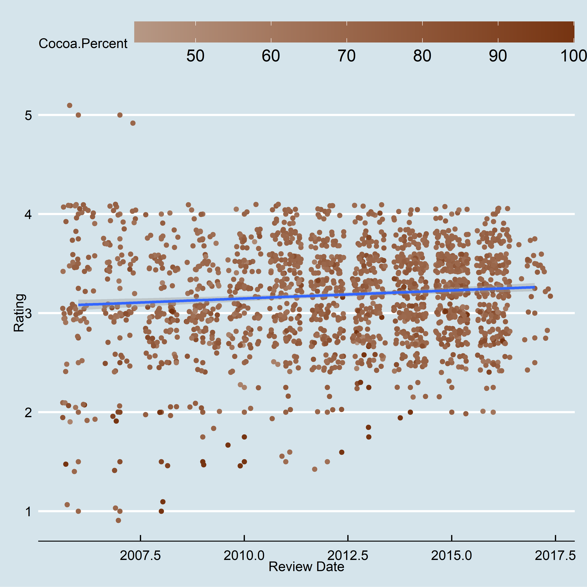
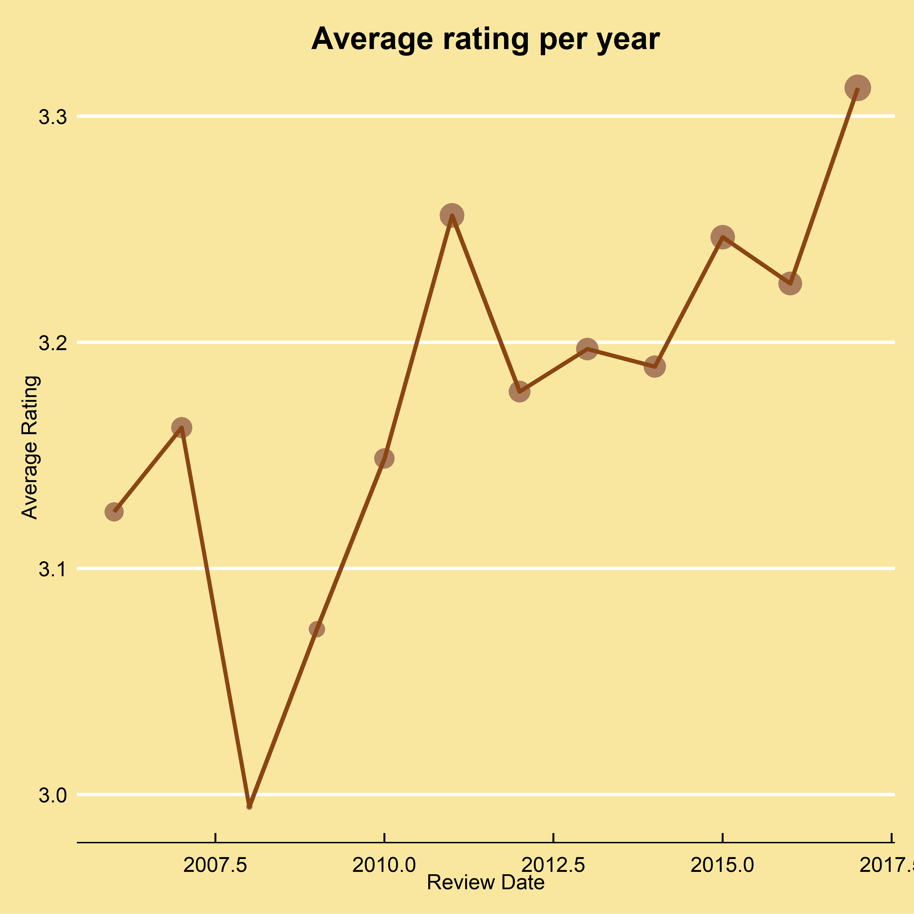
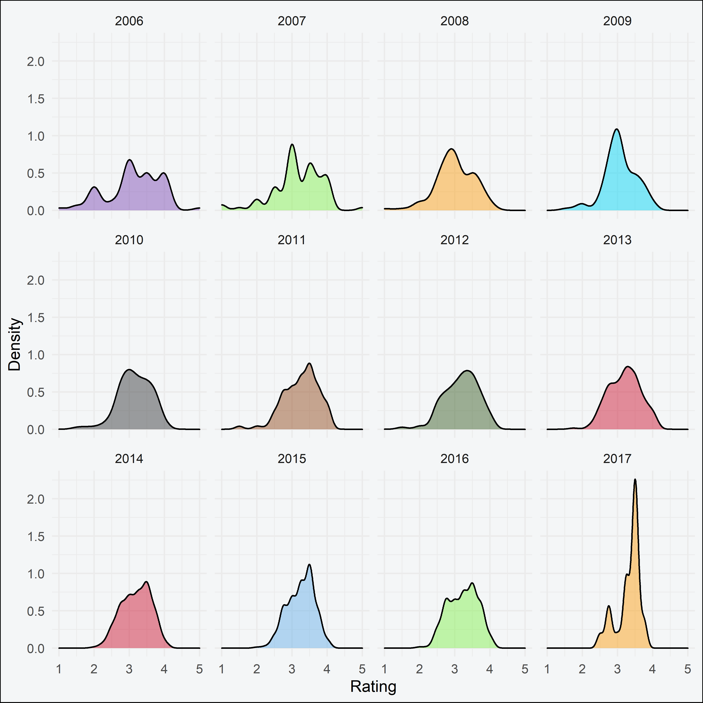
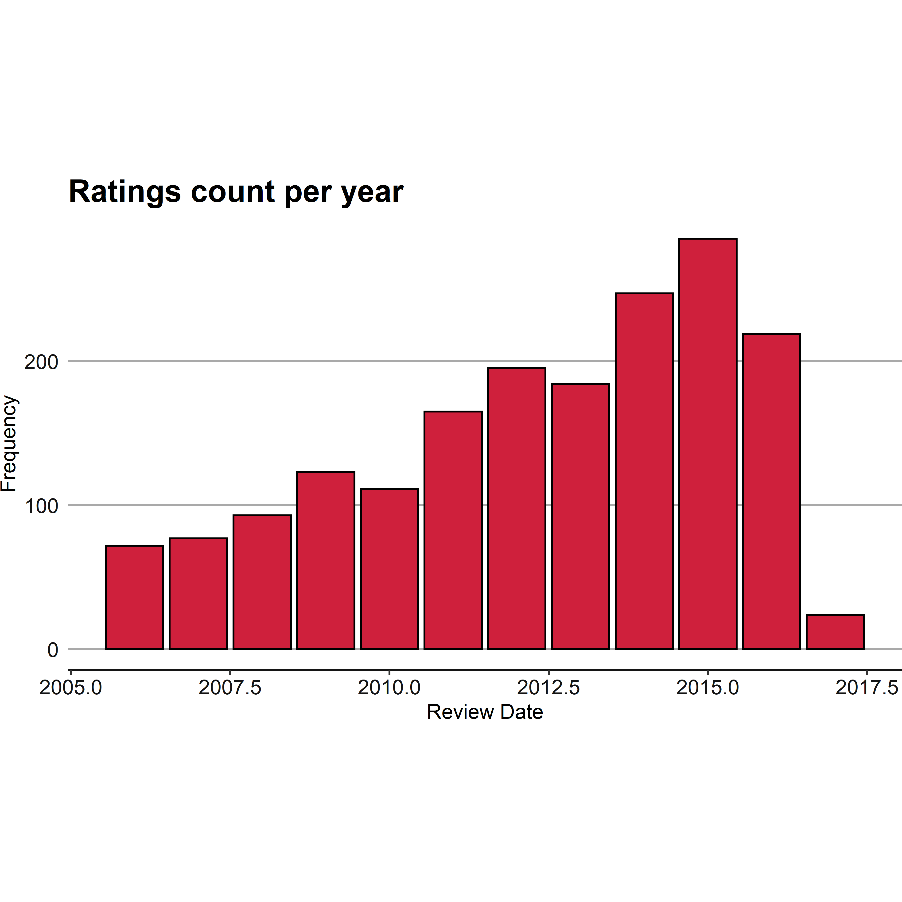

Chocolate is a beloved sweet, all around the world. Who doesn’t love chocolate right? In this project we will analysing the chocolate dataset using the statistical programming language R. We happen to be lovers of both chocolate and R, so this is a sweet treat for us.
When performing tests in a laboratory, all the tools needed for the tests on that particular day are brought out of storage and placed in the lab ready to go. R is no different, we need to prepare our laboratory for the tests to come.
Packages are a compilation of functions created by third parties that extend the features of base R. Many of these packages are superfluous, but a select few have become essential.
This project uses a lot of third party defined functions, so to make readers of our project aware of the packages that they would need to install to reproduce our results, we place all our library calls in the beginning, so that the code fails early. It also makes it easier and quicker to debug should a package be missing.
pkgs <- c("ggthemes", "hrbrthemes", "htmltools", "lubridate", "tidyverse")
sapply(pkgs, function(x) if (!require(x, character.only = TRUE)) {
install.packages(x, repos = "https://cran.mirror.ac.za/")
require(x, character.only = TRUE)
})The code above programmatically checks if a package is installed before attempting to load the package. The require function is used here instead of library. This is because require returns FALSE and gives a warning, whereas library throws an error. Therefore, the result of require can be used to evaluate if a package is installed, so that it can be installed if it isn’t.
The chocolate dataset is saved as a .csv file, which stands for comma separated values. Your file explorer might lead you to be believe that this is an excel file but it isn’t! The .csv file is really a text file where variables are separated by commas. It just so happens that the default program on many systems is a spreedsheet program.
R loves working with text files, with the base read.csv function readily available to import data into R. So let us bring in our data!
chocolate <- read.csv("chocolate.csv")The packages have been loaded and the data has been imported, time to start getting acquainted with the chocolate dataset.
We start by viewing the structure of the data.
str(chocolate)'data.frame': 1795 obs. of 9 variables:
$ CompanyÂ...Maker.if.known. : chr "A. Morin" "A. Morin" "A. Morin" "A. Morin" ...
$ Specific.Bean.Origin.or.Bar.Name: chr "Agua Grande" "Kpime" "Atsane" "Akata" ...
$ REF : int 1876 1676 1676 1680 1704 1315 1315 1315 1319 1319 ...
$ Review.Date : int 2016 2015 2015 2015 2015 2014 2014 2014 2014 2014 ...
$ Cocoa.Percent : chr "63%" "70%" "70%" "70%" ...
$ Company.Location : chr "France" "France" "France" "France" ...
$ Rating : num 3.75 2.75 3 3.5 3.5 2.75 3.5 3.5 3.75 4 ...
$ Bean.Type : chr "Â " "Â " "Â " "Â " ...
$ Broad.Bean.Origin : chr "Sao Tome" "Togo" "Togo" "Togo" ...Then we use the glimpse function from dplyr, installed and loaded with the tidyverse, to see some of the observations from each column.
glimpse(chocolate)Rows: 1,795
Columns: 9
$ CompanyÂ...Maker.if.known. <chr> "A. Morin", "A. Morin", "A. Morin", "A. ...
$ Specific.Bean.Origin.or.Bar.Name <chr> "Agua Grande", "Kpime", "Atsane", "Akata...
$ REF <int> 1876, 1676, 1676, 1680, 1704, 1315, 1315...
$ Review.Date <int> 2016, 2015, 2015, 2015, 2015, 2014, 2014...
$ Cocoa.Percent <chr> "63%", "70%", "70%", "70%", "70%", "70%"...
$ Company.Location <chr> "France", "France", "France", "France", ...
$ Rating <dbl> 3.75, 2.75, 3.00, 3.50, 3.50, 2.75, 3.50...
$ Bean.Type <chr> "Â ", "Â ", "Â ", "Â ", "Â ", "Criollo",...
$ Broad.Bean.Origin <chr> "Sao Tome", "Togo", "Togo", "Togo", "Per...We can see that columns with strings are of type character and columns with numbers are either of type integer or double, which is good as it means R read in the data correctly.
However, R, by no fault of its own, read in the Cocoa Percent column as a character. This is because of the percentage symbol, so it would not be a number. We can remove this using gsub() like so:
chocolate$Cocoa.Percent <- gsub("%", "", chocolate$Cocoa.Percent) %>%
as.data.frame()%>%
type_convert() %>% unlist()Parsed with column specification:
cols(
. = col_double()
)Dplyr’s type_convert() function guess the type of the data from the first 1000 observations and then converts the data to that type.
Now that we’ve gotten a fill of the data, we can proceed with summary stats.
Summary statistics provide key facts that describe the data and central tendency. It is very easy to obtain summary statistics in R with the summary function. The summary function works best with numeric variables, so we use select_if to select numeric columns only and pass them to summary
chocolate %>%
select_if(is.numeric) %>%
summary(chocolate) REF Review.Date Cocoa.Percent Rating
Min. : 5 Min. :2006 Min. : 42.0 Min. :1.000
1st Qu.: 576 1st Qu.:2010 1st Qu.: 70.0 1st Qu.:2.875
Median :1069 Median :2013 Median : 70.0 Median :3.250
Mean :1036 Mean :2012 Mean : 71.7 Mean :3.186
3rd Qu.:1502 3rd Qu.:2015 3rd Qu.: 75.0 3rd Qu.:3.500
Max. :1952 Max. :2017 Max. :100.0 Max. :5.000 ggplot(chocolate, aes(x= Review.Date, y = Rating, color = Cocoa.Percent)) +
geom_point() +
geom_jitter() +
geom_smooth(method = 'lm')+
scale_color_continuous(low = "#b69885", high = "#763411")+
theme_economist()+
theme(legend.key.width = unit(5, "lines"))
The code above creates a scatter plot. The graph shows that reviews have become more condensed over time. Initially, the reviews were more spread out earlier on. The early years had a lot of 1 and 2 star ratings. Conversely, there hasn’t been a 5 star review since 2007.
Interestingly, the cocoa percentage does not appear to have any correlation with the rating given.
Now we will look at how the average ratings of the chocolate bars has progressed over the years. This is done with a combination of geom_point and geom_line, with the latter being used to connect the points made by the former.
chocolate %>%
group_by(Review.Date) %>%
summarise(averageRating = mean(Rating)) %>%
ggplot(aes(y= averageRating, x = Review.Date ))+
geom_point(color="#aa7e5c", aes(size=averageRating)) +
geom_line(group=1, color="chocolate4", size = 1.1) +
theme_economist() + theme(legend.position="none", plot.title=element_text(hjust=0.5), plot.background=element_rect(fill="#F9E79F")) +
labs(title="Average rating per year", x="Review Date", y="Average Rating")
The plot shows that the average rating of chocolate bars has increased over time. Initially, the reviews dropped off steeply before increasing post 2008. The overall trend shows an uptick in ratings.
The code chunk below creates a graph that shows the distribution of ratings across the years. This is important in order to see how the ratings change over the years.
To create the plot, we use geom_density() to create a the density plot. Then we use facet_wrap to place each individual year density plot on its own grid.
The scale_fill_manual() function is used to map custom colours to each density plot. This function is used when the specified fill in the aes call is a factor. If it was a continuous variable, we would use scale_fill_continuous(), which would require a low and high argument passed to it.
chocolate %>%
ggplot(aes(x = Rating, fill = as.factor(Review.Date))) +
geom_density(alpha = .5) +
theme_minimal() +
theme(plot.title=element_text(hjust=0.5), plot.background=element_rect(fill="#F4F6F7"))+
scale_fill_manual(values = c("#8253b7", "#89f057", "#fba31d", "#0ad7f6",
"#3f4143", "#975228", "#42652f", "#cf203c",
"#cf203c", "#6eb3ea", "#89f057", "#fba31d"))+
facet_wrap(~ as.factor(Review.Date)) +
guides(fill = FALSE) + labs(x = 'Rating', y = 'Density')
The graph shows again how much the ratings change through the years. This time we can clearly see the range of ratings per year. For instance, the earlier years (2006, 2007, 2008) have a flat distribution. The later years have a much steeper distribution, showing again that the ratings have improved in recent years.
Looking at the 2017 distribution, it is incredibly steeper than the other years, even the immediately prior years. What happened in 2017? Furthermore, does the projection in ratings mean that the quality of chocolate bars increased?
chocolate %>%
group_by(Review.Date) %>%
summarise(n = n()) %>%
ggplot(aes(x=Review.Date, y=n)) +
geom_bar(stat='identity', fill="#cf203c",color="black") +
theme(plot.title=element_text(hjust=0.5))+
labs(title = "Ratings count per year", x = "Review Date", y = "Frequency") +
theme(aspect.ratio = 3.9/7.2,
text = element_text(family = "Roboto Condensed"),
plot.margin = margin(0,0,0,0),
panel.background = element_rect(fill = "white"),
panel.grid.major.x = element_blank(),
panel.grid.major.y = element_line(color = "darkgrey"),
axis.text = element_text(size = rel(1), color = "gray8"),
axis.line.x = element_line(color = "gray8"),
axis.ticks.y = element_blank(),
plot.title = element_text(size = rel(1.5), hjust = 0, face = "bold"),
plot.caption = element_text(hjust = 0, size = 9))
So it out turns out that the reason why the ratings in 2017 were so high was because the number of ratings was disproportionately low. In fact, it’s the lowest number of observations of any of the years.
We will now perform a simple regression to answer a question we had in the exploratory data analysis: Is the cocoa percentage a strong predictor in the rating given to the chocolate bar? Let’s find out.
model <- chocolate %>%
lm(formula = Rating ~ Cocoa.Percent)
summary(model)
Call:
lm(formula = Rating ~ Cocoa.Percent, data = .)
Residuals:
Min 1Q Median 3Q Max
-2.2071 -0.3196 0.0429 0.3178 1.7929
Coefficients:
Estimate Std. Error t value Pr(>|t|)
(Intercept) 4.079388 0.126757 32.183 < 2e-16 ***
Cocoa.Percent -0.012461 0.001761 -7.076 2.12e-12 ***
---
Signif. codes: 0 '***' 0.001 '**' 0.01 '*' 0.05 '.' 0.1 ' ' 1
Residual standard error: 0.4717 on 1793 degrees of freedom
Multiple R-squared: 0.02717, Adjusted R-squared: 0.02662
F-statistic: 50.07 on 1 and 1793 DF, p-value: 2.122e-12The coefficient is statistically significant at the 1% level. So it looks like the percentage of cocoa in the bar does affect the rating given to the chocolate bar. However, the coefficient itself is not large in magnitude, so the effect, although present and statistically different from zero, is not a large one.
And that concludes our basic R project. We hope you have enjoyed it.